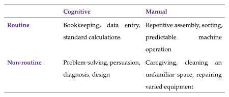

Heterogeneous labor inputs¶
One great thing about deriving theoretical results is that many of them can be applied to new settings. Economists have taken advantage of this, using the CES model to understand income differences between different types of workers. We typically refer to these differences as the skill premium. The idea is that workers differ in their skills leading them to perform different kinds of tasks which in turn differ in their productivity.
It will take us some time to give a proper definition of what skills and tasks are, but for now you can think of the differences between the type of jobs carried out mostly by college educated workers and how they differ from some jobs carried out mostly by workers who do not hold a college degree. These jobs differ in the types of skills used and the specific tasks carried out, but, ultimately, we see that college educated workers have, on average, higher incomes. Therefore, the convention has been to separate to workers into high and low skill groups to reflect their high and low incomes. When we get to discuss the multi-dimensional nature of skills we will see that there is no a priori sense in which some workers are high- or low-skilled, instead, workers differ in the combination of skills they possess and in the tasks they perform. This leads to differences in incomes, but does not reflect (necessarily) "amounts" of skill.
Now, back to the CES. Let \(H\) denote high-skill labor and \(L\) low-skill labor. Output comes from employing both types of labor (we will forget about capital for just a while, but it is hiding in plain sight):
Our objective is to use the insights we developed before to think about how technological change affects different types of workers. To do this we reinterpret the technological terms \(A_H\) and \(A_L\) as skill-biased technological change. That is, changes in technology or in tools (here is where capital is hiding!) that complement one type of labor. The classical example of skill-biased technological change is the introduction of personal computers to the workplace. This technology complements more "high-skilled" workers than "low-skill" workers, increasing their productivity.
The skill premium¶
Using the same marginal-product steps as in Section 3, and normalizing the output price to one, competitive wages are
Dividing them gives the relative wage, or skill premium:
Expressing the skill premium in changes separates it into two forces:
- Relative supply. More high-skill workers, \(H/L\uparrow\), reduce the skill premium. Skills that become more abundant become relatively cheaper.
- Skill-biased technological change. When \(\sigma>1\), high-skill-augmenting technology, \(A_H/A_L\uparrow\), raises the skill premium. This is because technology shifts demand toward high-skill labor. When \(\sigma<1\) and high- and low-skill labors are hard to substitute, low-skill labor acts like a weak link and skill bias goes down.
This is Tinbergen (1974)'s "race between education and technology." Tinbergen studied how readily graduate workers could be substituted for other workers in production and how this affected their relative earnings. He examined the competing effects of an expanding supply of educated workers and technological change that increased demand for their skills. Education increases the supply of skills; technological change can increase demand for them. The skill premium rises when demand runs ahead of supply and falls when supply runs ahead of demand.
These same forces matter for the differences in income between types of labor. We can look at the ratio of the expenditure in the two labor types the same way we looked at input shares before:
Once again, the effect on income differences between input factors depends on whether inputs are easy or hard to substitute, whether \(\sigma\) is higher or lower than one.
Example 4.1: Supply grows, but the premium also grows
Suppose the relative supply \(H/L\) rises. This is actually what has happened in most countries, as the share of college graduates has increased consistently since the mid twentieth century. By itself this should reduce \(w_H/w_L\). However, the observed skill premium rises instead, equation (4.22) tells us that relative demand must have shifted toward high-skill workers by enough to offset the supply effect.
Taking Stock¶
The skill premium responds to relative supplies and relative productivities. The table collects the two results, keeping technology fixed in the supply experiment and physical labor supplies fixed in the technology experiment.
Testing the model's predictions¶
We can test if the model is working well to explain the way in which the labor market has transformed by contrasting its predictions with some major trends observed in labor markets:
- The college wage premium rose substantially, even as the relative supply of college-educated workers increased.
- Real earnings for many workers without a college degree stagnated or fell, particularly for less-educated men.
- Employment growth became polarized across occupations: it was strongest in high-wage professional and managerial occupations and in low-wage service occupations, while many middle-wage clerical, production, and administrative occupations contracted.
The first fact fits naturally into Tinbergen's race and the model we have. If the skill premium rose while skilled labor became more abundant, relative demand for skill must have risen even faster. But we know that our model is incompatible with the second fact. Any technological advancement must lead to higher wages for all inputs. This is what we showed in Section 3.3.
The third fact is usually called "job polarization." It refers to a change in the shape of employment across occupations. Employment shares grow near the top and bottom of the occupational wage distribution while shrinking in the middle. The pattern is inconsistent with a strictly monotone mapping from skill rank to employment growth. A one-dimensional skill model does not explain why low-wage service occupations expand while many middle-wage occupations contract.
The routinization hypothesis¶
The limitations of the CES model call for the development of new theories. One noteworthy theory is the "routinization hypothesis." The key concept that it brings to the table is that how much skill a worker has is not the only thing that matters. We also need to understand but what the worker does in the workplace.
This hypothesis proposes a division of the tasks carried out by workers into two dimensions. One covers cognitive and manual properties of tasks (think of writing vs moving crates). The second one classifies tasks based on how routine they are, that is, how codifiable and repetitive they are. Both cognitive and manual tasks can be routine. For example, Computers and machines are particularly effective at activities that can be described by explicit, stable, and repeatable procedures. These are routine tasks. Bookkeeping, quality control, and many production processes can require training and care while still following codifiable rules. Routine does not mean easy or unimportant, but, as we will see more along the course, routine can mean "automatable."

This division gives us a framework to think about the effects of technological change. Information technology can substitute for routine cognitive and routine manual tasks. At the same time, it can complement non-routine cognitive tasks by making information cheaper to access and process. Many non-routine manual and interpersonal tasks remain difficult to automate because they require physical adaptability, situational judgment, or direct human interaction.
This combination can generate polarization. Technology reduces demand for many routine tasks concentrated in middle-wage occupations, complements abstract tasks concentrated near the top, and leaves demand for many in-person service tasks comparatively intact near the bottom. We will formalize this framework when we develop the task-based model of production in the next Section.
Many researchers have contributed to this literature, but the routinization hypothesis is chiefly associated with the work of David Autor and his coauthors (Autor et al. 2003). Related contributions include Autor et al. (2006); Autor et al. (2008) on polarization and Autor and Dorn (2013) on low-skill service employment.